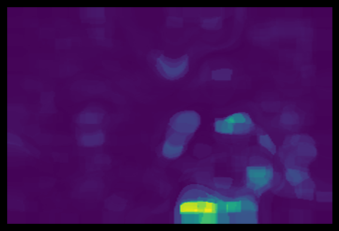

Phrase Localization is the task of localizing bounding boxes referred to textual phrases in a given image. It has many down-stream applications, e.g., visual question-answering, image caption, and human computer interaction. They propose a method to adapt/re-purpose CLIP for phrase-localization without extra training. The method can do so without any extra supervision or training, i.e., the method immediately improves advanced CLIP models with more advanced models.
Researchers propose a method for textual grounding entirely from a pre-trained language-vision model (CLIP) without any bounding box supervision. The approach outperforms ZSGNet by an absolute 5% on three out of fthe zero-shot phrase localization splits over Flickr30k and VG. They also achieve comparable performance in long-tailed object categories compared to no-training methods that utilize pre-training object detectors. They conduct extensive experiments and ablation studies demonstrating the effectiveness of the approach.
Given a text query and image as input, they extract spatial features (per-pixel) and a text embedding using pre-trained CLIP. For each pixel location, they compute the cosine similarity between the spatial feature and the embedding resulting in a score map. They then formulate bounding box prediction as a scoremaximization problem: "Y" The key is to maintain the semantic meaning (i.e., alignment with language embeddings) of these spatial features to be the same as the original image embedding.
Given an input X = (I, T ), they extract a text embedding from CLIP, etxt ∈ RD. They also extract a ‘spatial”, per-pixel, image, image-embedding Eimg using CLIP (details deferred to Sec. 4.3) They compute an inner-product between the text and image to relate text to image, i.e., σ denotes the temperature scaling parameter in CLIP. In Sec. 3, CLIP’s ViT encoder consists of L attention layers. At layer l, the class token embedding e(l+1) is computed as.
Eq. (7) can be implemented as masked self-attention and computed efficiently in parallel. To extract a H × W × D feature map with per-pixel embedding vectors of size D, pixel locations with a region is assigned the same final embedding vector, i.e., r(L)ij = r(Rm)ij (i, j) ∈ Rm) The feature map can be extracted from a set of M non-overlapping spatial regions Rm using simple linear iterative
CLIP’s ViT architecture consists of multiple con-volution layers followed by a single attention layer for global pooling. They propose to modify the first convolution layer of ViT by reducing its stride. This can be viewed as extracting patch features with a sliding window, which leads to an increase in the number of patches. The remaining attention layers remain unchanged besides processing more patchfeatures. To obtain spatial features per patch, they introduce a “class token” for each patch r(1) and aggregate over this patch.
Using Eq. (13) enables the extraction of embedding vectors, however, the spatial resolution is low due to large patch sizes. To address the low resolution issue, they aim to.extract a higher resolution feature map without extra training, e.g., distillation in DenseCLIP The last step uses the fact(W Qfm, W K[fm) =. (W Kfm)) =. (W Qf)(W Fm)(12)=. (12) (13f) (14f) The last word(Fm) is Fm: Fm. (Fm. FmFmF
Phrases in the test set are not seen in the training set and there are no phrases belonging to the same object category of any text phrase. This split corresponds to the Case 1 in ZSGNet. The training set uses all the examples in “other" as validation and test sets, and examples of the remaining categories are used in training set. The test set is not used as a validation or as a training set or as an example set.
Quantitative Results on various splits of Flickr and Visual Genome datasets. Here, they report the Acc@thr metric for each of the methods (the higher the better) They also report performance on standard, i.e., non zero-shot,ipient split of the Flickr30k dataset. They also compared with DenseCLIP by using their method to extract spatial features. They use CLIP to extract image embedding for each bounding box and the query’s text embedding. For an image-query pair, they first use a traditional bounding. box proposal method(selective search [41) to get the
They adopt the widely used Acc@thr metric for evaluation, where thr refers to the threshold of intersection over union (IoU) A predicted bounding box is considered correct if the ground-truth box is greater than the threshold. They follow ZSGNet to use a threshold of 0.5 for Flickr30k and 0.3 for VG.8.888. They use supervised object detectors which naturally biased them to perform better on object categories that
They use the latest-released CLIP model (ViT with patch size 14 and a 4.4× scaled ResNet50) with the method2.2. They obtain regions by pooling SLIC maps with 100, 150,..., 600 superpixels. The two parameters that have the biggest impact on the performance is the weightinging factor in the bounding box score Eq. (4) and the temperature term σ in E. (5) They tune these hyperparameters for different variants of the method on the validation sets of Flickr30k and VG-VG respectively.
They observe that the method can correctly localize uncommon phrases such as ‘stilts’ and ‘electrical wires’ It can be seen that larger models consistently outperform smaller models. They also observe typical failure cases of the method, visualized in Fig. 4, including the score maps and the predicted bounding boxes. With smaller patch size, ViT patch tokens can capture roughly 10% of the phrase-localization performance. They conclude that the phrase.localization. performance improves as the CLIP model size increases.